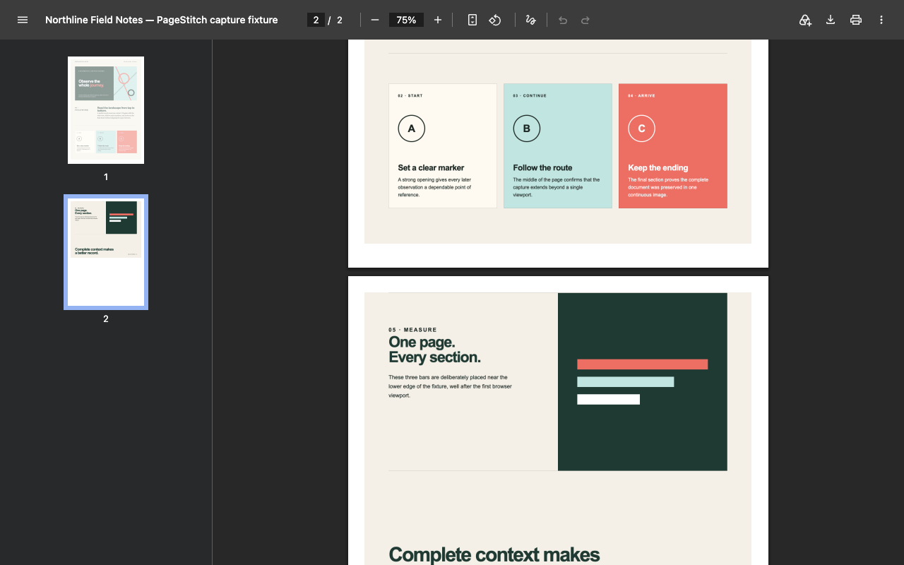

Step by step
Save a webpage as a PDF with PageStitch
PageStitch turns a capture into a PDF on your device. Nothing is uploaded.
- 01
Open an ordinary web page and click the PageStitch toolbar button, or press Alt+Shift+S (Option+Shift+S on macOS).
- 02
Choose Full page (or press Enter) and keep the tab active while the toolbar badge shows progress.
- 03
In the result tab, check the preview. If you like, open Edit image first to crop, annotate, or blur.
- 04
Open the Download PDF page-size menu and choose One long page, A4, or US Letter.
- 05
Leave Clickable links on to keep the page's links working, and on A4 or Letter leave Page numbers on if you want them. Then save the file.

Page sizes
One long page, A4, or US Letter
- One long page. The whole capture on a single page, however tall it is. Even very large captures become one PDF.
- A4 and US Letter. The capture is split into pages, with page breaks placed between content where possible instead of through the middle of a line.
- Page numbers. A4 and US Letter PDFs can number their pages ("1 / 3") in the bottom margin.
Links
Clickable links in the saved PDF
Most links on the captured page stay clickable in the PDF. To make that work, PageStitch keeps the addresses of the links on the page with the capture on your device, deletes them with the capture, never transmits them, and writes them into a file only when you save a PDF with Clickable links on.
Know the limits:
Link typesOnly http:, https:, and mailto: links are kept.
Some links are skippedLinks inside fixed or sticky elements, inside SVG, inside shadow DOM, and beyond the first 2,000 on the page are not clickable.
Edits change linksA link under a blur, a filled shape, or an emoji is removed, and cropping moves or drops links with the image.
Scrolling panelsA capture of a scrollable panel (the result tab says Captured scrollable content) stores no links.
Image or text
The PDF is a picture of the page
PageStitch's PDF is image-only: it looks exactly like the capture, but the words cannot be selected or searched. If you need selectable text, Chrome can save a page as a PDF from its print dialog (Ctrl+P, then Save as PDF), though the layout may reflow for print; the guide to screenshotting an entire webpage compares the two.
Private
Local only
The capture, the editing, and the PDF are all made on your device. PageStitch has no account, analytics, advertising, cloud storage, or remote code, and asks Chrome for only activeTab, scripting, and offscreen. The privacy policy has the details.
Good to know
Common questions
Do I need to pay to save a PDF?
No. Saving a PDF, including clickable links and page numbers, is free in PageStitch, with no account.
Can I save a very long page as a PDF?
Yes. A capture too large for one image is split into numbered PNG parts, and a multipart capture can still be saved as one PDF.
Can I edit the capture before making the PDF?
Yes, for single-image captures. The editor is free and the PDF includes your edits.
Keep reading